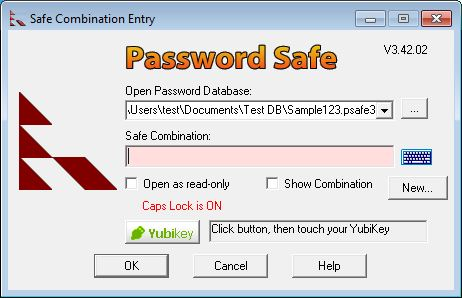

Password Safe allows users to store all passwords in a single "safe" (password database), or to create multiple databases for different purposes (e.g., one for work, one for personal use). Each database is independent and can be moved and used on different systems, as long as the same version of Password Safe is installed. Databases are encrypted with an encryption key derived from the master password (the master password, however, is not kept in the database in any form).
If you are using Password Safe for the first time, press the "New..." button. You will be asked to choose the name and location of your password database (the default, "pwsafe.psafe3", is fine). Afterwards, you will be prompted to enter a master password that is used to encrypt and lock the contents of your new safe.
Password Safe works very hard to make sure you password information is saved properly. However, Password Safe cannot protect against physical damage or loss to your hard disk, laptop or PC. Therefore, we strongly recommend that you make regular copies of your password database 'off-line', that is, to another PC or disk. This can be done manually, or by using a cloud storage service such as DropBox, SugarSync or JungleDisk, to name a few.
Another thing you might want to consider is arranging for access to your password database by relatives or co-workers if you are no longer able to do so. Password Safe has no 'back door' or 'recovery password' mechanism by design. This means that you are responsible for making the master key available to others under the appropriate circumstances. This can be as simple as a sealed envelope in a drawer or safe-deposit box, or a more elaborate mechanism such as splitting the master password and giving different parts to different parties.
There are two ways that a new database can be created. By clicking New... from the Safe Combination Entry dialog when the program is started, or from the "File ? New..." menu once Password Safe has been opened. Using either method causes the Safe Combination Set Up dialog to appear.
On checking the "Show Combination" box, the contents of old and new combination will be visible in clear and the confirmation combination edit box is disabled as no longer necessary.
Password Safe can work with a YubiKey device to provide "two factor authentication", that is, protecting your database by both something you know (your "Safe Combination" or master passphrase), and something you have (the YubiKey device). If you do not have a YubiKey device, then the YubiKey-specific buttons and texts will not be displayed by Password Safe, and the YubiKey-specific instructions below do not apply.
If your YubiKey is connected to your PC, then a "Yubikey" button and text area will appear in the Safe Combination Entry and Setup windows, as show above. This allows you to use your YubiKey to access your Password Safe database, either in addition to, or instead of a "Safe Combination". For maximum security, we recommend that your database be protected both by your YubiKey and a Safe Combination (this is known as two-factor authentication).
To use your configured YubiKey to protect your database:
To open a Password Safe database protected with your Yubikey:
To setup a master password in a secure way, you could use accented
characters (e.g. on a German keyboard) such as ü, ß
or similar. To realize the input of such characters, you would
need a foreign keyboard. Such a keyboard is available as a virtual
keyboard. This keyboard is then used to simulate all available foreign characters.
The virtual keyboard can be shown
by clicking on the  symbol. Foreign characters, that are not available at the physical
keyboard, can be put in in this way. So you can build your desired master password.
Even pieces of the master password can be built this way.
symbol. Foreign characters, that are not available at the physical
keyboard, can be put in in this way. So you can build your desired master password.
Even pieces of the master password can be built this way.